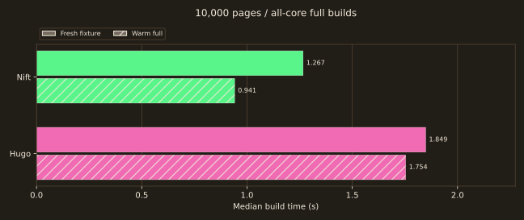
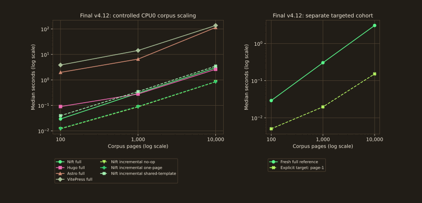
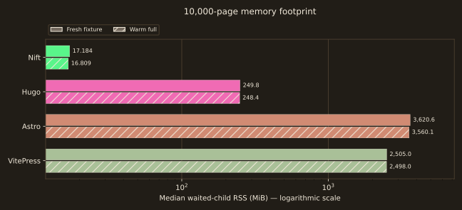

Experiment 02 / build architecture
From source files
to 10,000 pages.
A controlled throughput experiment in four build systems. Minimal content, tool-native sources, checked routes and explicit full/incremental boundaries.
Zero-origin 0–120s lanes · medians · shared dependencies/cache prepared. Minimal-page throughput, not a real-site ranking. State and fairness boundaries ↓
Nift-only production iteration; no competitor incremental/HMR comparison. Byte equality with full recomputation is checked.
100 → 1,000 → 10,000 title/heading/body pages.
Fresh application state or warm full build; all four CPUs.
Exact routes, titles, headings and body content.
Current Nift v4.12.0 final candidate; all tools may use the same four-vCPU host. Exact source, worker policies, retained samples and earlier cohorts are identified below. Historical measurements remain separate.
10,000-page corpus
Time and memory, with boundaries attached.
Incremental peak memory
Memory for changed-input production publications, separate from full-build memory and elapsed time. Linear bars start at zero; exact values are shown in MiB.
100 pages / no-op
100 pages / one-page
100 pages / shared-template
1,000 pages / no-op
1,000 pages / one-page
1,000 pages / shared-template
10,000 pages / no-op
10,000 pages / one-page
10,000 pages / shared-template
100 pages / explicit target
1,000 pages / explicit target
10,000 pages / explicit target
Five measured samples per cell: median [min–max]. All-core same-host final v4.12; explicit targets retain a separate serial cohort. No competitor incremental/HMR comparison. Full case tables and evidence below retain the other scopes and workloads.
At 10,000 pages, Nift’s fresh-fixture full-build median was 1.267 s and Hugo’s was 1.849 s. Astro and VitePress were 116.0 s and 103.9 s. These are observations for minimal pages, with each system’s build machinery included.
| Generator | Fresh s | Warm full s | Fresh RSS MiB | Warm RSS MiB |
|---|---|---|---|---|
| Nift | 1.267 | 0.941 | 16.938 | 16.812 |
| Hugo | 1.849 | 1.754 | 245.0 | 240.2 |
| Astro | 116.0 | 112.3 | 3,566.1 | 3,664.0 |
| VitePress | 103.9 | 96.792 | 2,512.0 | 2,550.6 |






The cost of more pages
| Pages | Boundary | Nift | Hugo | Astro | VitePress |
|---|---|---|---|---|---|
| 100 | Fresh fixture | 0.017 | 0.081 | 1.849 | 2.727 |
| 100 | Warm full | 0.015 | 0.081 | 2.023 | 2.815 |
| 1,000 | Fresh fixture | 0.141 | 0.237 | 6.446 | 9.380 |
| 1,000 | Warm full | 0.107 | 0.257 | 6.883 | 9.310 |
| 10,000 | Fresh fixture | 1.267 | 1.849 | 116.0 | 103.9 |
| 10,000 | Warm full | 0.941 | 1.754 | 112.3 | 96.792 |
Three measured points, not a fitted complexity model. Fixture/dependency preparation is outside timing; generated output is produced inside it.



| Pages | No-op s | One changed page s | Shared template s |
|---|---|---|---|
| 100 | 0.008 | 0.008 | 0.018 |
| 1,000 | 0.044 | 0.046 | 0.149 |
| 10,000 | 0.364 | 0.357 | 1.194 |
| Pages | Fresh full reference s | Explicit page-1 target s |
|---|---|---|
| 100 | 0.016 | 0.006 |
| 1,000 | 0.129 | 0.022 |
| 10,000 | 1.251 | 0.163 |
Explicit target means nift build page-1 after changing that one leaf in an already fully built corpus. It does not scan/build all changed pages or rebuild a shared-template change. Every sample validates the complete corpus, unchanged unrelated pages, and byte equality with a full rebuild. The target cohort uses this same four-vCPU host, exact candidate binary and worker policy. Its separate fresh-full reference is not pooled with the main full-build samples.
Nift’s development loop
| Change | Median s | Min–max s | RSS MiB |
|---|---|---|---|
| no-op | 0.364 | 0.351–0.414 | 10.684 |
| one-page | 0.357 | 0.351–0.381 | 11.688 |
| shared-template | 1.194 | 1.176–1.211 | 17.934 |
One independent leaf or the shared template is changed before each run. Every resulting output set must match a full rebuild of that same mutated input byte-for-byte.
Iteration memory / peak RSS
Incremental memory matters alongside elapsed time: a smaller affected build can leave more headroom for concurrent builds, CI jobs and agents on constrained machines. Shared changes and retained worker pools can still use substantial memory; an incremental build is not guaranteed to have a lower peak than a full build. Actual concurrency and total workflow productivity were not benchmarked.
Kernel waited-child high-water RSS; not aggregate simultaneous process-tree RSS. Five measured samples per cell: median [min–max]. All-core same-host final v4.12; explicit targets retain a separate serial cohort. No competitor incremental/HMR comparison.
| Case | Nift |
|---|---|
| 100 pages / no-op | 5.85.6–5.9 |
| 100 pages / one-page | 6.96.8–6.9 |
| 100 pages / shared-template | 6.96.8–7.0 |
| 1,000 pages / no-op | 6.05.9–6.1 |
| 1,000 pages / one-page | 7.06.9–7.1 |
| 1,000 pages / shared-template | 7.87.8–7.9 |
| 10,000 pages / no-op | 10.710.6–10.7 |
| 10,000 pages / one-page | 11.711.6–11.7 |
| 10,000 pages / shared-template | 17.917.7–17.9 |
| 100 pages / explicit target | 6.96.8–7.0 |
| 1,000 pages / explicit target | 7.07.0–7.2 |
| 10,000 pages / explicit target | 11.711.6–11.8 |
Different scopes and hosts remain separate; full-build memory is not substituted for an edit. Raw measurements, provenance and memory scopes ↗
Equivalence before speed
The output has to contain the page.
Every build checks the complete corpus route set and each page’s exact title/heading and expected body. Hugo raw HTML is enabled; Astro uses file routes; VitePress has a minimal custom theme, retains hydration assets and generates one extra validated 404 page.
Fresh-fixture builds (raw mode application-cold) recreate the entire project fixture; shared pinned node_modules/toolchains and their generated dependency cache remain prepared across the series. Astro/Vite’s shared node_modules/.vite cache is inventoried. This does not measure a complete reset of all application caches. Warm full removes generated output/cache directories while retaining other application build state. Both are full builds; neither is a machine-cold boot. Nift build_threads=-1; Hugo GOMAXPROCS is unset; every timed process can use CPUs 0–3. Full builds invoke nift build --all; normal incremental builds invoke nift build. These command boundaries are distinct.
One warmup plus five measured samples per cell, rotating tool order. C-supervised fork/exec-to-exit latency excludes Python/supervisor launch. Kernel waited-child RSS is a high-water metric, not simultaneous aggregate tree memory; concurrent children/shared pages require a separate accounting boundary.
| Generator | Removed before warm full | Retained state |
|---|---|---|
| Nift | public/ | .nift/ tracking metadata |
| Hugo | public/, resources/ | other project state |
| Astro | dist/, .astro/ | shared node_modules dependency cache |
| VitePress | docs/.vitepress/dist/, docs/.vitepress/cache/ | shared node_modules dependency cache |
Observation → interpretation
A small build surface is useful evidence.
Different preparation, rendering, bundling and hydration paths appear in these costs, while their features are mostly unused by minimal pages. Nift also has a broader scripting/build role than a conventional SSG. The fixture does not exercise complex Markdown/MDX, assets, component graphs or maintained production websites.
Warm full names the retained-state workflow, not an expected speedup. Different totals do not identify individual planning/rendering/cache phases; those were not profiled. Scaling describes this fixture. Competitor incremental server/HMR behaviour was not measured; comparing it to Nift’s one-shot dependency build requires a new equivalent experiment.
Work performed
Matching page semantics, different emitted work.
Every tool satisfies the same route/title/heading/body contract. That does not mean equal emitted bytes or identical product features. These are separate untimed fresh builds on the same host; their counts explain the workload boundary, not a causal allocation of elapsed time.
| Pages | Tool | Input files | Input bytes | Output files | Output bytes | New internal files | New internal bytes |
|---|---|---|---|---|---|---|---|
| 100 | Nift | 103 | 13,474 | 100 | 12,780 | 101 | 64,941 |
| 100 | Hugo | 102 | 10,078 | 100 | 12,880 | 1 | 0 |
| 100 | Astro | 101 | 12,903 | 100 | 12,780 | 2 | 5,553 |
| 100 | VitePress | 102 | 4,325 | 306 | 663,491 | 0 | 0 |
| 1,000 | Nift | 1,003 | 134,974 | 1,000 | 129,780 | 1,001 | 653,541 |
| 1,000 | Hugo | 1,002 | 101,878 | 1,000 | 130,780 | 1 | 0 |
| 1,000 | Astro | 1,001 | 129,903 | 1,000 | 129,780 | 2 | 5,553 |
| 1,000 | VitePress | 1,002 | 42,125 | 3,006 | 31,942,091 | 0 | 0 |
| 10,000 | Nift | 10,003 | 1,376,974 | 10,000 | 1,317,780 | 10,001 | 6,584,541 |
| 10,000 | Hugo | 10,002 | 1,046,878 | 10,000 | 1,327,780 | 1 | 0 |
| 10,000 | Astro | 10,001 | 1,317,903 | 10,000 | 1,317,780 | 2 | 5,553 |
| 10,000 | VitePress | 10,002 | 429,125 | 30,006 | 3,018,844,091 | 0 | 0 |
At 10,000 pages, VitePress emits 30,006 files totalling 3,018,844,091 bytes, including about 3.007 GB across its 10,001 HTML files. Nift emits 10,000 public files totalling 1,317,780 bytes and creates 10,001 internal metadata files totalling 6,584,541 bytes; Hugo emits 1,327,780 public bytes. The manifest records these substantial output-volume and bookkeeping differences. Timing ratios describe this frozen fixture, not equal byte throughput or a universal platform ranking.
Output-type breakdown · All twelve workload inventories. Full path/size/hash manifests are retained alongside them.
Frozen environment
The same four-vCPU machine for every tool.
One fresh g6-standard-4 Linode in us-east: 4 vCPUs, 8 GiB RAM, Ubuntu 24.04; AMD EPYC 7642 48-Core Processor. All timed processes can use CPUs 0–3. Nift build_threads=-1; Hugo GOMAXPROCS is unset. Astro and VitePress retain their normal pinned benchmark configuration. This is whole-machine parallel throughput, not the earlier CPU0 cohort.
Nift v4.12.0, exact clean source c14d06835bca515a5281e41da0e40219c2d60ef0, GCC 13.3 and normal native Make -O2. CLI SHA-256 7dd42dcee5ca4a6965f0823c0ae59198282da1eb77e0fcd4cae93a537870a6fb. The unchanged suite is frozen at a2890bc504cf7c55b77cd4fddae17403b7caf8ae; the separately recorded adapter changes worker policy only.
| Tool | Recorded version |
|---|---|
| Nift | Nift v4.12.0 |
| Hugo | hugo v0.167.0-3fff6fb5c267dacb26280c78dbe8c344054249c8 linux/amd64 BuildDate=2026-09-28T14:50:38Z VendorInfo=gohugoio |
| Node.js | v24.21.0 |
| Astro | 7.3.6 |
| VitePress | 1.6.4 |
All 39 jobs passed independent checks: 195 measured samples and 39 warmups, 234 observations. Fresh/warm full, normal incremental and explicit targets retain their own state boundaries. Their raw samples are not pooled with previous campaigns.
Exact source and binary identities · Frozen all-core sample plan · Exact commands and cleanup boundaries · Independent acceptance gate.
Reproduce / scrutinise
Every new observation is retained.
100-page raw samples · 1,000-page raw samples · 10,000-page raw samples · Separate targeted cohort · Fixture/output work accounting. Exact source, warmups, failed preflight attempts, host provenance and teardown receipts remain in the campaign. Historical evidence is unchanged.
Practitioner judgement / AI-DX
Choose the workflow as well as the build time.
For a human-authored existing Hugo/theme estate, I would stay with Hugo when its conventions already fit. For a new human-plus-agent maintained site, an agent-primary site or a mixed procedural publishing project, I would choose Nift when its APIs and explicit tracking fit the requirements. These are qualitative choices, not measured authoring success rates or a universal platform ranking.
Explicit source/output ownership, template dependencies, named targets and .f helper policy can make bounded agent edits easier to inspect. Familiarity to humans and safe agent reasoning are different questions. The measured incremental and targeted paths support practical iteration; the frozen harness checked complete routes, intended contents and full-rebuild parity. Those harness checks are not general product-native guarantees, and equivalent Hugo incremental/HMR recovery was not measured.
Conclusion
Defensible as minimal-page throughput.
The corrected fixture and output gates support this bounded experiment. Its measurement boundaries should travel with every quoted number; read real-site migration reports for architecture and maintenance tradeoffs.
Nift Benchmarks